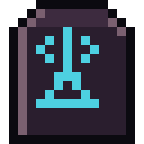

Guides / 07

The crow and the radio
What the crow warns about, Crow Radio, the weekly horde, weather and full moon.
The crow
When you put the first door on your base, a crow lands on it. It stays. Only you can see it.
- Warns of the horde: when many zombies are coming after you, it flies in from that direction, cawing.
- Shows bodies: circles piles of bodies that haven't been searched yet.
- One place a day: lands on an unlooted place nearby that gets one extra rare item.
- It flies in from the direction of your group's alerts, and flees from loud noise.
With the Crow button on the map, give it food to build a bond. With more trust it carries light things to the vault, points out special zombies, fetches a small item from the vault and, at the last level, caws to distract up to 3 zombies for a while. When it is hungry, it doesn't fly.
Crow Radio
With a radio in your backpack, in the chests or in the vault, open the menu → Radio:
- The week's horde: announced from Monday, 30 to 60 zombies coming from one direction, on a night between Wednesday and Sunday. It crosses the region in a straight line, and the radio tells you if it passes near your base.
- Supply drops: 2 a week in the region, by day. They stay for 24 hours and their noise draws zombies for a while. Without a radio, you only hear about the ones very close by.
- Tip of the day: an unlooted place with one extra rare item.
- Weekly mission: take down, loot, walk or store planks, and earn stamps.
- The phrase of the day, and alarms that go off around the city and pull the zombies.
Real weather and time
- Rain: muffles your noise, shortens your view, cools you and fills the barrel.
- Fog: shortens your view a lot.
- Storm: muffles noise more, but makes the zombies restless.
- Night: starts at the real sunset. In the small hours they get restless and hear better.
- Full moon: you see farther at night, but so do they, and more of them come out walking.
Guias / 07
O corvo e o rádio
O que o corvo avisa, a Rádio Corvo, a horda da semana, clima e lua cheia.
O corvo
Quando você põe a primeira porta na base, um corvo pousa nela. Ele fica. Só você o vê.
- Avisa a horda: quando muitos zumbis vêm atrás de você, ele chega voando daquela direção, grasnando.
- Mostra corpos: rodeia pilhas de corpos que ainda não foram revistadas.
- Um lugar por dia: pousa num lugar não saqueado ali perto que ganha um item raro a mais.
- Voa da direção dos avisos do seu grupo, e foge de barulho alto.
No botão Corvo do mapa, dê comida para criar laço. Com mais confiança ele leva coisas leves até o depósito, aponta zumbis especiais, busca um item pequeno do depósito e, no último nível, grasna para distrair até 3 zumbis por um tempo. Com fome, ele não voa.
A Rádio Corvo
Com um rádio na mochila, nos baús ou no depósito, abra o menu → Rádio:
- A horda da semana: anunciada desde segunda, de 30 a 60 zumbis vindos de uma direção, numa noite entre quarta e domingo. Ela atravessa a região em linha reta, e o rádio diz se passa perto da sua base.
- Caixas de suprimento: 2 por semana na região, de dia. Ficam 24 horas e o barulho delas chama zumbis por um tempo. Sem rádio, você só fica sabendo das muito perto.
- Dica do dia: um lugar não saqueado com um item raro a mais.
- Missão da semana: abater, saquear, andar ou guardar tábuas, e ganhar selos.
- A frase do dia, e alarmes que disparam pela cidade e puxam os zumbis.
Clima e hora reais
- Chuva: abafa o seu barulho, encurta a visão, esfria e enche o barril.
- Neblina: encurta muito a visão.
- Tempestade: abafa mais o barulho, mas deixa os zumbis agitados.
- Noite: começa no pôr do sol de verdade. Na madrugada eles ficam agitados e ouvem melhor.
- Lua cheia: você vê mais longe à noite, mas eles também, e mais deles saem andando.
Guías / 07
El cuervo y la radio
Lo que avisa el cuervo, Radio Cuervo, la horda de la semana, clima y luna llena.
El cuervo
Cuando pones la primera puerta en la base, un cuervo se posa en ella. Se queda. Solo tú lo ves.
- Avisa de la horda: cuando muchos zombis vienen tras de ti, llega volando desde esa dirección, graznando.
- Muestra cuerpos: rodea las pilas de cuerpos que aún no se registraron.
- Un lugar por día: se posa en un lugar sin saquear cercano que gana un objeto raro extra.
- Vuela desde la dirección de los avisos de tu grupo, y huye del ruido fuerte.
En el botón Cuervo del mapa, dale comida para crear un vínculo. Con más confianza lleva cosas livianas al depósito, señala zombis especiales, trae un objeto pequeño del depósito y, en el último nivel, grazna para distraer hasta 3 zombis por un rato. Con hambre, no vuela.
Radio Cuervo
Con una radio en la mochila, en los cofres o en el depósito, abre el menú → Radio:
- La horda de la semana: anunciada desde el lunes, de 30 a 60 zombis que vienen de una dirección, en una noche entre miércoles y domingo. Atraviesa la región en línea recta, y la radio dice si pasa cerca de tu base.
- Cajas de suministros: 2 por semana en la región, de día. Duran 24 horas y su ruido atrae zombis por un rato. Sin radio, solo te enteras de las que están muy cerca.
- Pista del día: un lugar sin saquear con un objeto raro extra.
- Misión de la semana: abatir, saquear, caminar o guardar tablas, y ganar sellos.
- La frase del día, y alarmas que suenan por la ciudad y atraen a los zombis.
Clima y hora reales
- Lluvia: amortigua tu ruido, acorta la vista, enfría y llena el barril.
- Niebla: acorta mucho la vista.
- Tormenta: amortigua más el ruido, pero deja a los zombis agitados.
- Noche: empieza con la puesta de sol real. De madrugada se agitan y oyen mejor.
- Luna llena: ves más lejos de noche, pero ellos también, y salen a caminar más de ellos.